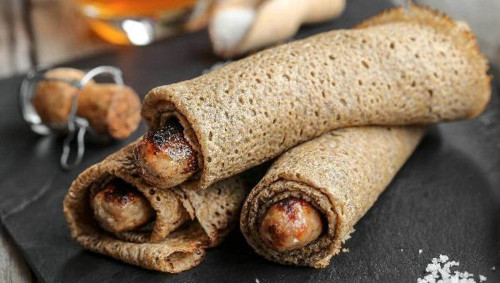

La galette saucisse est une recette bretonne à base de galette
de sarrasin et de saucisse de porc. Elle est consommée depuis le XIXème siècle,
notamment lors d’évènements sportifs ou de fêtes populaires.
C’est un repas de restauration rapide très simple à faire,
rapide à cuisiner et peu coûteux. On peut l’accompagner
d’un verre de cidre, pour un plat typique de la Bretagne !

Recette :
Ingrédients :
Pour une galette saucisse :
1 saucisse (chipolata par exemple)
1 galette de sarrasin
25 g de beurre salé
Étapes :
Faites cuire la saucisse à la poêle ou au barbecue.
5 minutes avant la fin de cuisson de la saucisse, faites chauffer une poêle beurrée (avec du beurre salé bien sûr !).
Déposez la galette dans la poêle et laissez chauffer quelques minutes pour la réchauffer.
Déposez la saucisse dans la galette et enroulez-la. Vous pouvez la repasser quelques minutes à la poêle ou au barbecue.